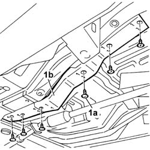
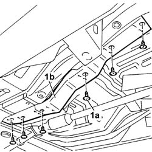
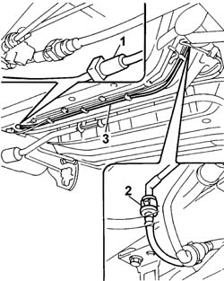

1040B55 intermediate fuel return pipe r r
- Path
- Procedures > 10 ENGINE > 1040 FUEL TANK AND PIPES > 1040B FUEL SUPPLY/RETURN CIRCUIT PIPE > 1040B55 intermediate fuel return pipe r r
- Kind
- repair procedure (removal / refitting; the operation number is the code)
- Applies to
- all engines; all production periods
- Interactive page
- https://sloeber94.github.io/elrnDB-fDbl/en/#/2584449
Applies to: all engines; all production periods
 Removing
Removing
 Refitting
RefittingPlace the car on a ramp.
Disconnect the battery negative terminal.
Raise the vehicle.
1. Undo fastenings (1a) and remove plastic protection (1b) complete with fuel pipes.

Applies to: all engines; all production periods
Removing
RefittingPosition the vehicle on the ramp.
1. Undo the fixings (1a) and remove the complete fuel pipes protection (1b).

Applies to: all engines; all production periods
1. Disconnect the middle section of the fuel pipe from the front section, acting on the rapid connector.
2. Disconnect the middle section of the fuel pipe from the rear section, acting on the rapid connector.
Release the fuel pipe from the springs on the bodyshell.
3. Remove the middle section of the fuel pipe.
Applies to: all engines; all production periods
1. Disconnect the rapid attachment of the intermediate fuel return pipe from the front one.
2. Disconnect the rapid attachment of the intermediate fuel return pipe from the rear one.
3. Remove the intermediate fuel return pipe after releasing it from the fixings under the bodyshell.

Applies to: all engines; all production periods
Refitting
RemovingPosition the middle section of the fuel pipe.
Connect the middle section of the fuel pipe to the front section and to the rear section, acting on the rapid connectors.
Fit the plastic protection for the fuel pipes.
Lower the vehicle.
Connect the battery negative terminal.
Remove the vehicle from the ramp.
Applies to: all engines; all production periods
Refitting
RemovingRefit the intermediate fuel return pipe in its seating and secure it with the clips under the bodyshell.
Connect the rapid connector for the intermediate fuel return pipe to the rear one.
Connect the rapid connector of the intermediate fuel return pipe to the front one.
Fit the fuel pipes protection back in its seating and secure it.
Remove the car from the ramp.